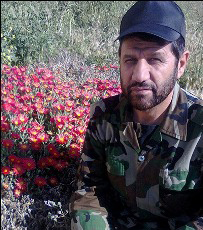
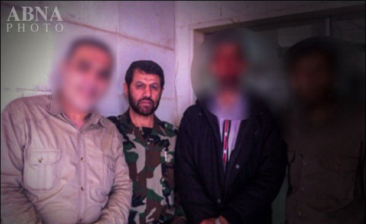

شهادت فرمانده ایرانی مدافع حرم در سوریه +عکس
سردار حاج هادی کجباف طی عملیاتی که در منطقه "بصر الحریر" استان درعا صورت گرفت به مقام رفیع شهادت نایل آمد. شبکههای اجتماعی وابسته به گروههای تکفیری مدعی شدند که پیکر مطهر این شهید شوشتری در اختیار آنان است. به گزارش خبرگزاری اهل بیت (ع) ـ ابنا ـ منابع آگاه از شهادت یک فرمانده مستشار ایرانی که مسئولیت ساماندهی نیروهای مدافع حرم اهلبیت(ع) در سوریه را بر عهده داشت، خبر دادند. سردار حاج «هادی کجباف» ظهر روز یکشنبه 30 فروردین طی عملیاتی که در منطقه "بصر الحریر" استان درعا صورت گرفت به مقام رفیع شهادت نایل آمد. برخی شبکههای اجتماعی وابسته به گروههای تکفیری مدعی شدند که پیکر مطهر این شهید شوشتری در اختیار آنان است. شهید کجباف از اولین نیروهای مستشار ایرانی بود که پس از هجوم تکفیریها به حریم اهل بیت(ع)، در سوریه حاضر شد. 